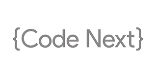
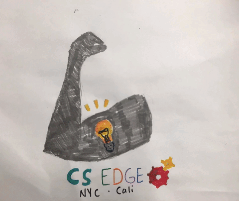

THIS PAGE IS TO SHOW THE DIFFERENT TYPES OF PROGRAMS THAT I WAS OR STILL IN.
google's code next

Code Next aims to create ”aha!” moments that connect computer science to students’ everyday lives. It’s funded entirely by Google, and free for all participants. Partner organizations, such as Black Girls Code and local middle schools, nominate students to join, and the fun and culturally-relevant curriculum focuses on general CS concepts. Participants drive their own projects — such as designing and programming a robot and 3D printing an Android chess set — and after months of learning, become creators of technology that they can share with their community.
google's cs edge

(PART OF CODE NEXT)Code Next aims to create ”aha!” moments that connect computer science to students’ everyday lives. It’s funded entirely by Google, and free for all participants. Partner organizations, such as Black Girls Code and local middle schools, nominate students to join, and the fun and culturally-relevant curriculum focuses on general CS concepts. Participants drive their own projects — such as designing and programming a robot and 3D printing an Android chess set — and after months of learning, become creators of technology that they can share with their community.
PUBLICOLOR

PUBLICOLOR IS A LONG-TERM YOUTH DEVELOPMENT PROGRAM THAT ENAGES HIGH-RISK STUDENT IN THEIR EDUCATION THROUGHOUT THE YEAR WITH A CONTINUUM OF DESIGN-BASED PROGRAMSS THAT MENTOR THEM FOR SUCCESS IN COLLEGE,CAREER,AND LIFE
SDS

(ALSO PART OF PUBLICCOLOR)Through Summer Design Studio (SDS), our seven-week summer enrichment program, we teach at-risk teens literacy and math through the scaffold of product design. We hold our design and S.A.T. preparation classes at Pratt Institute on the Brooklyn campus, so our students can experience the reality of college. Summer Design Studio also offers disadvantaged youth crucial employment and work experience: every afternoon, students are involved in painting under-resourced but vital neighborhood facilities.Research shows that low-income students who don’t have access to organized activities lose about two months of grade equivalency over the summer. This sad reality deepens the achievement gap and puts underserved students at greater risk of dropping out. Our goal is for all of our SDS students to return to school in the fall ahead of where they were upon departing for the summer.
MOUSE

Mouse is a national youth development nonprofit that believes in technology as a force for good.
MED START

The MedStart Enrichment Program at the Icahn School of Medicine at Mount Sinai is designed for middle-school students (6th-8th grade) who are interested in science and medicine or who would benefit from a more interactive approach to learning.
EXPLORING DISCOVER YOUR FUTURE

Exploring exists to teach important life and career skills to young people from all backgrounds through immersive career experiences and mentorship provided by community and business leaders like you. Together, we equip young people with character, leadership and life skills that can be used both today and in their future careers.Exploring is based on a unique and dynamic relationship between youth and the organizations in their communities. Businesses and community organizations initiate a career-specific Explorer post or club by matching their people and organizational resources to the career interests of youth in the community. The result is a program of interactive activities that helps youth pursue their special interests, grow, and develop.
We work with thousands of local, regional, and national businesses and organizations to deliver the Exploring programs representing hundreds of different career fields.
PENCIL

DTCC mentors are working with 30 10–12th grade students in the 2015–16 school year.
Mentors participate in monthly sessions to provide Lower East Side Prep’s high need student population –
students are English Language Learners or need to make up credits in order to graduate – with college
preparatory activities. Partnership sessions help students increase their awareness of diverse career and
college pathways and topics include goal setting and college and career planning, resume writing, building a
professional network, and interviewing. DTCC professionals work with the same students throughout the year to
establish strong relationships and connect session content to their real world experiences.